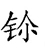

季巿君足下：一别忽已过年，当枯坐牙门[120]中时，怀想弥苦。顷蒙书，藉审梗概，又据所闻，则江西厅[121]较之不上不落之他厅，尚差胜，聊以慰耳。来论谓当灌输诚爱二字，甚当；第其法则难，思之至今，乃无可报。吾辈诊同胞病颇得七八，而治之有二难焉：未知下药，一也；牙关紧闭，二也。牙关不开尚能以醋涂其腮，更取铁钳摧而启之，而药方则无以下笔。故仆敢告不敏，希别问何廉臣[122]先生耳。若问鄙意，则以为不如先自作官，至整顿一层，不如待天气清明以后，或官已做稳，行有余力时耳。再此间闻老虾公[123]以不厌其欲，颇暗中作怪，虽真否未可知，不可不防。陈君地窃谓当早为设法，缘寿山[124]请托极希，亦当聊塞其请也。《新青年》[125]以不能广行，书肆拟中止；独秀[126]辈与之交涉，已允续刊，定于本月十五出版云。罗遗老[127]出书不少，如明器，印[128]之类，俱有图录，惜价贵而无说，亦一憾事。孙氏《名原》[129]亦印出，中多木丁[130]未刻，观之令人怅然，而一薄本需银一元，其后人惰于校刻而勤于利，可叹。仆迄今未买，他日或在沪致之，缘可七折，而今又不急急也。起孟讲义[131]已别封上。
树言 一月四日
部中对 君尚无谣言。兽道[132]已在秘书处行走，自遇兽道，可谓还治其身矣。吉黑二厅[133]，闻迄今尚未得一文，颇困顿。女官公[134]则厌厌无生意，略无动作。今日赴部，有此公之腹底演说，只闻新年二字，余乃倾听亦不可辨，然仆亦不复深究也。诸友中大抵如恒。惟季上[135]于十月初病伤寒，迄今未能出动；其女亦病，已痊；其夫人亦病，于年杪逝去，可谓不幸也矣。协和博负钱七八十，今日见之，目眶下陷，自言非因失眠，实缘小病，每微病而目眶便陷，彼家人人如此，似属遗传云云，仆亦不复深究之矣。此颂
曼福。
树顿首 作[136]附笔候
注 释
[119] 此信原无标点。
[120] 牙门 同“衙门”。这里指当时北洋政府教育部。
[121] 江西厅 指江西教育厅。许寿裳于1917年9月至1921年1月任该厅厅长。
[122] 何廉臣（1860—1929） 浙江绍兴人。中医，曾任绍兴医学会会长。
[123] 老虾公 疑指夏曾佑（1865—1924），字遂卿，一作穗卿，浙江杭县（今余杭）人。光绪进士，曾参加清末维新运动。后任北洋政府教育部社会教育司司长、京师图书馆馆长。
[124] 寿山 即齐宗颐（1881—1965），字寿山，河北高阳人。曾留学德国。后任北洋政府教育部佥事、视学。
[125] 《新青年》 综合性月刊，“五四”时期倡导新文化运动，传播马克思主义的重要刊物。1915年9月在上海创刊，由陈独秀主编，第一卷名《青年杂志》，第二卷起改名《新青年》。从1918年1月起，李大钊等参加该刊编辑工作。1922年7月休刊。共出九卷，每卷六期。
[126] 独秀 即陈独秀（1879—1942），字仲甫，安徽怀宁人。北京大学教授，《新青年》杂志创办人，“五四”时期提倡新文化运动的主要人物。1921年中国共产党成立后任党的总书记。第一次国内革命战争后期，推行右倾机会主义路线，使革命遭到失败。之后他成了取消主义者，接受托洛茨基派的观点，成立反党小组织，于1929年11月被开除出党。
[127] 罗遗老 指罗振玉（1866—1940），字叔蕴，号雪堂，浙江上虞人。清末曾任学部参事官等职。辛亥革命后以遗老自居。“九一八”后任伪“满洲国”监察院院长、临时政务督办及满日文化协会常任理事。
[128] 明器 即冥器（陪葬物品）。印

，即印玺。罗振玉曾辑有《古明器图录》（四卷）以及印谱《凝清室古官印存》、《隋唐以来官印集存》等。[129] 孙氏 指孙诒让（1848—1908），字仲容，浙江瑞安人，清末经学家、文字学家。《名原》，二卷，是有关文字起源及其演变的书。
[130] 木丁 即木钉。木板书刻板后，如发现错字，即挖空，打入木钉重刻。如未补刻，印出后即留下黑斑。
[131] 起孟讲义 指周作人当时在北京大学任教时所编的《欧洲文学史》讲义。
[132] 兽道 疑指凌念京，字渭卿，四川宜宾人。1917年12月7日北洋政府教育部命令将他“调部任用派在秘书处办事”。
[133] 吉黑二厅 指吉林、黑龙江两省的教育厅。
[134] 女官公 指傅增湘（1872—1949），字沅叔，四川江安人，藏书家。清末进士，曾任翰林院编修、京师女子师范学堂总理。辛亥革命后曾任议员，1917年12月至1919年5月，任北洋政府教育总长。相传太平天国时有女状元傅善祥任东王（杨秀清）府女官首领，因姓名与傅增湘读音相近，故这里以“女官公”代指傅增湘。
[135] 季上 即许丹（1891—1950），字季上，浙江杭州人。曾任北洋政府教育部主事、视学、编审员，北京大学讲师等职。
[136] 作 指周作人。